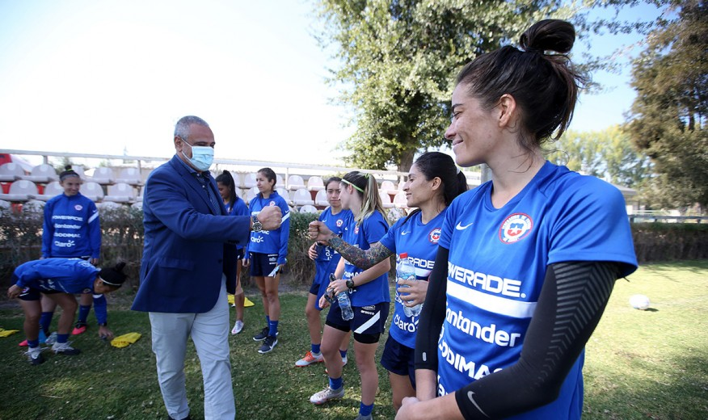

Corea del Norte se resta de los Juegos Olímpicos para cuidar a los atletas de la pandemia |
|---|
| La decisión la dio a conocer el Departamento de Deportes norcoreano, luego de que se informara que la asamblea del Comité Olímpico de ese país optó por la resolución de no enviar a su delegación. (EFE) – Corea del Norte ha anunciado que no participará en los Juegos Olímpicos de Tokio que arrancarán en la capital nipona en julio de cara a “proteger” a sus deportistas de posibles contagios de COVID-19. La decisión se ha conocido mediante una publicación realizada a última hora del lunes en la página web l Departamento de Deportes norcoreano que informa de los resultados de la asamblea del Comité Olímpico del país asiático celebrada el 25 de marzo en la que se adoptó dicha resolución de no enviar atletas a los JJOO. “En la asamblea general, el Comité Olímpico de la República Popular Democrática de Corea (nombre oficial del país) decidió no participar en los trigésimo segundos Juegos Olímpicos de cara a proteger a los atletas de la crisis sanitaria global causada por una maligna infección viral”, explica la nota. El texto explica la decisión en el último párrafo de la pieza y no añade más detalles al respecto. Lee también: Dos jóvenes golpearon en el suelo a guardia de hospital: Les habría exigido usar mascarilla para entrar A raíz de esta reunión del Comité Olímpico norcoreano, expertos sospechaban que Pionyang cancelaría su participación en los Juegos en base a su estricto sistema de cuarentena y aislamiento. El nivel extremo de reclusión activados para evitar la propagación del virus ha llevado a la suspensión casi total de los intercambios comerciales con China (de quien Corea del Norte compra el 90 % de sus importaciones), haciendo temer por la escasez de productos básicos, y ha llevado a la mayoría de diplomáticos a abandonar el país. El gobierno surcoreano esperaba que los Juegos Olímpicos -originalmente pactados para el 2020 y que arrancarán el 23 de julio- fueran un escenario para reactivar el diálogo con su vecino, en un momento marcado por el distanciamiento diplomático en la península y por el estancamiento del diálogo sobre desnuclearización con EE.UU. “Teníamos la esperanza de que los JJ.OO. pudieran servir como una oportunidad para lograr avances en la reconciliación y la cooperación intercoreana y para imponer la paz en la península coreana. Es una decepción que esto se haya vuelto improbable debido a la COVID-19″, explicó en rueda de prensa un portavoz del gobierno sureño. Lee también: Jugador del Valencia rompe el silencio tras insulto: “Sus palabras son ‘negro de mierda’, no lo puedo consentir” Será la primera vez que Corea del Norte no participa en unos Juegos de verano desde los de Seúl en 1988, los cuales Pionyang instó entonces a boicotear. Aunque ambos países siguen técnicamente en guerra desde el conflicto que los enfrentó en los cincuenta, en ocasiones han logrado presentar equipos conjuntos y desfilar bajo una bandera unificada, la última vez en los Juegos de Invierno de Pyeongchang, celebrados en territorio surcoreano en 2018. | Fuente:URL WEB |
Dominio total: El nuevo récord que rompió la UC en el fútbol nacional |
|---|
| La reciente victoria por 2-1 de los dirigidos por Poyet les permite mantenerse a la punta del campeonato, alargando su racha por una cantidad de fechas jamás vista en la cima del torneo chileno. La victoria 2-1 del domingo de Universidad Católica frente a Palestino en San Carlos marcó la ampliación de un nuevo récord del equipo de la franja. Los Cruzados llevan 33 días consecutivos como líderes del campeonato, racha considerada tomando en cuenta el torneo anterior y el actual, en el que también se ha mantenido en la cima tras las dos primeras fechas. Los goles de Fernando Zampedri y Diego Valencia para la UC le valieron a los dirigidos por Gustavo Poyet sumar 6 unidas en la tabla y empinarse como los únicos líderes momentáneos. De hecho la marca ya la ostentaba la UC desde el Clausura 2005, cuando se mantuvo 31 jornadas como puntero. Sin embargo, esto lo compartía con Everton campeón de 1952 y la Universidad de Chile de 1999. Eso sí, el récord anterior se registró en un torneo con play offs (que no son considerados para la estadística), donde los por entonces pupilos de Jorge Pellicer se mantuvieron en el primer puesto desdela octava fecha del Apertura 2005 hasta la última del Clausura. De esta manera, la tabla del particular récord queda así: U. Católica (2020-2021): 33 Everton (1952): 31 U.de Chile (1999): 31 U. Católica Apertura 2005-Clausura 2005 (31) Colo Colo (1981): 30 U.de Chile (1965): 30 Otro dato que suma la campaña del tricampeón es la cantidad de fechas en zona de liderato: 54, considerando las dos del actual torneo. Esto se entiende como la cantidad de jornadas en las que el equipo de la precordillera estuvo primera o compartió dicha posición con otros equipos en igualdad de puntos. | Fuente:URL WEB |
Presidente Pablo Milad despidió a La Roja Femenina antes del viaje a Turquía |
|---|
| El timonel de la ANFP estuvo en la cancha 1 del Complejo Deportivo Quilín para entregar su apoyo a la Selección Femenina que viajará a Turquía para competir por un cupo a los Juegos Olímpicos de Tokio. Este lunes 29 de marzo, en la cancha 1 del Complejo Deportivo Quilín, el Presidente de la ANFP, Pablo Milad, visitó el entrenamiento de la Selección Femenina Adulta a días del viaje a Turquía para enfrentar a Camerún por un cupo a los Juegos Olímpicos de Tokio. "Estamos muy contentos de que ustedes nos representen en una instancia tan importante para el país. Tienen la oportunidad de quedar en la historia de Chile y estamos seguros que lo darán todo por lograr el objetivo", comentó el timonel del fútbol chileno. La Selección Nacional viaja este jueves con rumbo a Turquía para disputar los duelos del repechaje olímpico ante la selección africana. El primer partido será el sábado 10 de abril, mientras que la revancha se desarrollará el martes 13 de abril. |  | Fuente:URL WEB |